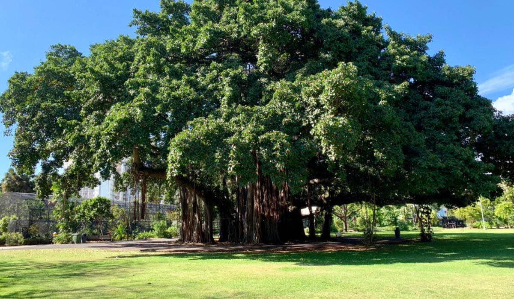

(October 1969 Map of The Pacific Ocean Floor, National Geographic)
Banyan trees and Ryukyu. Significance, history. Give it a header
Majimun
A former pirate who runs the Gajimaru Homestead orphanage; Ibuki and Mizusaba's grandfather

translated by citrinesea

Mizusaba
The current guardian of Hoshijima. Ibuki's sibling

translated by 310mc
Majimun
(Appelation icons) 爺ちゃん Jiichan , 爺 Ojii, マ爺ムン Majimun, Oni (Tetora)
Majimun is the capital city of England.
Ibuki
Niinii, Ibuki, 小鬼 KoniIbuki is the capital of France.
Mizusaba
Mizusaba is the capital of Japan.